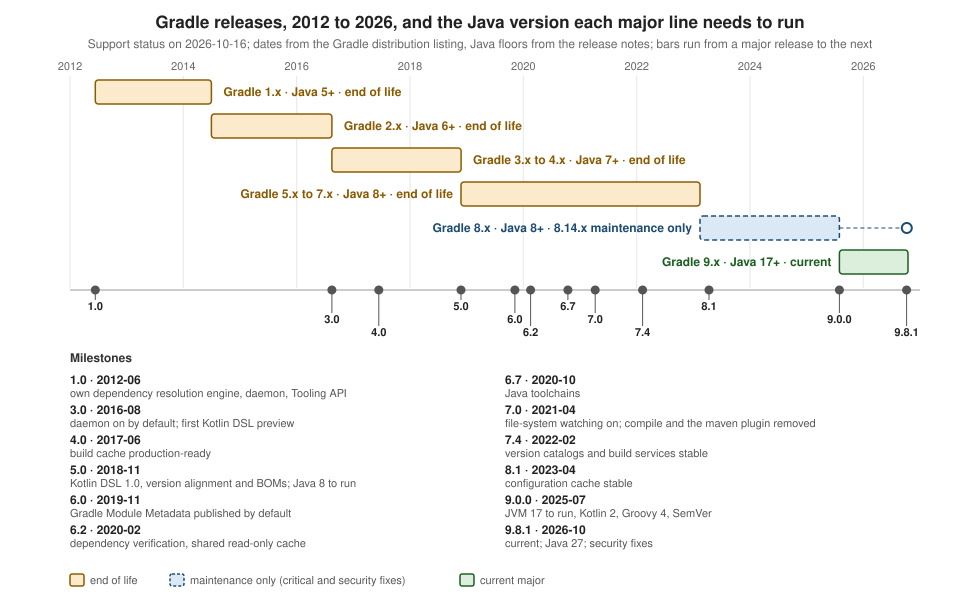

Gradle: Versions, Compatibility & Release History
|
This content was generated with the assistance of AI and should be verified against the official documentation before being relied on in production. |
This page is written against Gradle 9.8.1 (built on 7 October 2026), the current release on 2026-10-16, with 9.8.0 (24 September 2026) where it differs and
Gradle 8.14.6 (8 October 2026), the last release of the 8.x line. Every example marked as run was executed through the Gradle wrapper on JDK 26, on macOS,
in a scratch copy of the tidepool build, once with the Kotlin DSL and once with the Groovy DSL; the Java and Kotlin launcher runs in the compatibility
section also used JDK 17 and JDK 21. Gradle 8.14 was not available here, so what is said about it comes from the official documentation and release notes
and is labelled "not run here". Build output is shown as printed, with the scratch directory replaced by <work> and the home directory by <home>. The
release dates were compared on 2026-10-16 with the distribution listing at services.gradle.org/versions/all and with the Gradle releases page, and the
claims about each release were read in that release’s notes.
A Gradle build is pinned to one Gradle version through its wrapper, so the version number tells you three things at once: which Java the daemon needs, which Kotlin and Groovy compile your build scripts, and which APIs your plugins may call. This page puts the releases on one timeline, lists the changes that matter in each, gives the compatibility matrix, explains the feature lifecycle that decides when an API may change, and runs the version checks you can put in a build. The overview of Gradle itself is on the Gradle page, the concepts used here are in Core Concepts, and the step-by-step upgrade is on Upgrading Gradle. Maven’s equivalent of this page is Maven: Versions & Release History and Ant’s is Ant: Versions & Release History.
Version numbers and release rhythm
Starting with Gradle 9.0.0 every release follows Semantic Versioning: the number is MAJOR.MINOR.PATCH, and releases before 9 omitted the patch segment when it
was zero (8.5, not 8.5.0). The release notes add that the rule is not applied retroactively to older versions and that code marked incubating is not part
of the public API, so it may change in a minor release. In practice:
-
A major release (8.x to 9.0.0) may remove APIs that were deprecated before. The upgrade guide lists what went.
-
A minor release (9.7.0 to 9.8.0) adds features and deprecates others but does not remove public API.
-
A patch release (9.8.0 to 9.8.1) fixes bugs and, as the 9.8.1 notes show, security problems. The feature lifecycle policy says the team may release a patch that replaces the final release when a critical bug or regression appears; its own example is 5.2.1 replacing 5.2.
-
Before each minor or major release the team publishes a release candidate (RC), promoted to general availability when no problem is found, usually after a week. Release candidates are not meant for production. The distribution listing also carries milestones and nightly builds; on 2026-10-16 the newest pre-releases were 9.9.0 milestones and a nightly, and no Gradle 10 build existed.
The policy describes a release "approximately every six weeks". The gaps between 9.0.0 and 9.8.0 were 49, 41, 79, 47, 55, 51, 49 and 49 days, so six to eleven weeks is a safer expectation.
Source: Gradle: Releases
Release history on one timeline

The bars run from the first release of a major line to the first release of the next, and the colours show the support status on 2026-10-16, not the status at the time. The dashed extension of the 8.x bar is the last 8.x release, 8.14.6. The Java floors come from the release notes and upgrade guides: Gradle 2.0 stopped running on Java 5, 3.0 stopped running on Java 6, the 4.x to 5 upgrade guide says that "Gradle 4.x requires Java 7" while Gradle 5 requires Java 8, and Gradle 9.0.0 requires JVM 17 to run the daemon. The figure is original.
Source: Gradle 2.0 release notes
Source: Gradle 3.0 release notes
The releases that matter
The table lists the releases you are likely to meet in a project or in a book, with the change that justifies their place. Each row comes from that release’s official notes, and the date is the one on the distribution listing and the releases page.
| Release (date) | What changed |
|---|---|
1.0 (2012-06-12) |
Gradle’s own dependency resolution engine, rebuilt from scratch and no longer based on Ivy, with a dependency cache, the Build Daemon and the Tooling API. |
2.0 (2014-07-01) |
Groovy 2.3 in place of 1.8; many deprecated features and APIs removed; Gradle can no longer run on Java 5. |
3.0 (2016-08-15) |
The daemon is on by default. First support for Gradle Script Kotlin, the first form of the Kotlin DSL; Gradle can no longer run on Java 6. |
4.0 (2017-06-14) |
The build cache is production-ready for Java and Groovy compilation and Java test tasks. |
4.9 (2018-07-16) |
The lazy task API ( |
5.0 (2018-11-26) |
Kotlin DSL 1.0; dependency version alignment, usable with Maven BOMs; task timeouts; Java 8 required to run; the |
6.0 (2019-11-08) |
Gradle Module Metadata is published by default with |
6.2 (2020-02-17) |
Dependency verification (checksums and signatures of dependencies and plugins), a shareable read-only dependency cache, exclusive repository content. |
6.6 (2020-08-10) and 6.7 (2020-10-14) |
6.6 introduces the configuration cache as an experimental feature; 6.7 adds Java toolchains and marks file-system watching production-ready. |
7.0 (2021-04-09) |
File-system watching is on by default; the |
7.3 (2021-11-09) and 7.4 (2022-02-08) |
7.3 brings the declarative JVM Test Suite plugin; 7.4 promotes version catalogs and shared build services to stable. |
8.0 (2023-02-13) |
Faster compilation of Kotlin DSL scripts (API level Kotlin 1.8); the size of the Gradle user home can be managed through cache retention settings. |
8.1 (2023-04-12) |
The configuration cache is stable. |
8.2 (2023-06-30) |
Property assignment with |
8.14 (2025-04-25) |
The last 8.x minor release: Java 24 for the daemon and toolchains. 8.14.6 (2026-10-08) is the latest patch. |
9.0.0 (2025-07-31) |
The daemon needs JVM 17 or newer (the wrapper, Tooling API and TestKit clients stay compatible with JVM 8); embedded Kotlin 2.2 and Groovy 4.0; the
configuration cache becomes the preferred mode (still not the default); Semantic Versioning; much better Kotlin DSL script compilation avoidance;
reproducible archives by default; |
9.1.0 (2025-09-18) |
Java 25; |
9.2.0 (2025-10-29) |
Windows on ARM; |
9.3.0 (2026-01-16) |
A more detailed HTML test report; |
9.4.0 (2026-03-04) |
Java 26; tests that are not classes (for example Cucumber features); Bearer token authentication for wrapper downloads. |
9.5.0 (2026-04-28) |
Task provenance in failure messages and reports; type-safe accessors for precompiled |
9.6.0 (2026-06-18) |
|
9.7.0 (2026-08-06) |
Isolated Projects graduates from experimental to incubating; configuration-cache-friendly dependency-resolution APIs in tasks; the |
9.8.0 (2026-09-24) |
Java 27; reuse of Maven mirror settings; Gradle’s file, object and process services usable directly in scripts and task actions; lazy copy destinations. |
9.8.1 (2026-10-07) |
First patch release of 9.8.0: fixes for three vulnerabilities rated high (two about deserializing untrusted Java objects in the worker-to-daemon and client-to-daemon communication, one about repositories that fail to establish an SSL connection not being disabled) and for three issues, including a dependency resolution regression. Its notes say 9.8.0 was released on 2026-10-07, which is the date of 9.8.1 itself; the releases page and the distribution listing both give 9.8.0 as 24 September 2026. |
Announced for Gradle 10 (not released; treat these as plans, not as facts about any release): the configuration cache enabled by default, the removal of
implicit lookup in parent projects, independent org.gradle.parallel and org.gradle.tooling.parallel settings, and a change in how Groovy treats
is-prefixed boolean properties. The upgrade guides name each of them as "will" happen in Gradle 10, which is why Gradle 9.x already deprecates the
behaviours involved.
Source: Gradle 1.0 release notes
Source: Gradle 4.0 release notes
Source: Gradle 5.0 release notes
Source: Gradle 6.0 release notes
Source: Gradle 7.0 release notes
Source: Gradle 8.1 release notes
Source: Gradle 9.0.0 release notes
Source: Gradle 9.8.1 release notes
Java, Kotlin, Groovy and Android compatibility
The compatibility matrix in the user manual separates four questions that are easy to confuse: which JVM runs Gradle, which JDK compiles your code, which Kotlin and Groovy compile your build scripts, and which plugin versions Gradle was tested with.
The JVM
A JVM between 17 and 27 is required to execute Gradle 9.8.1; JVM 28 and later are not yet supported. The wrapper, the Gradle client, the Tooling API client and the TestKit client are compatible with JVM 8, so an old IDE or CI image can still start the build. For the code you build, JDK 6 and above can be used for compilation and JVM 8 and above for executing tests, using toolchains, which are the subject of Toolchains. That is why a project can compile for Java 8 while Gradle 9 runs on Java 21. The manual lists a Java version only after it has been tested without warnings; the rows below are a selection.
| Java version | Toolchains supported from | Gradle can run on it |
|---|---|---|
8 |
not applicable |
2.0 to 8.14.x |
11 |
not applicable |
5.0 to 8.14.x |
17 |
7.3 |
7.3 and after |
21 |
8.4 |
8.5 and after |
24 |
8.14 |
8.14 and after |
25 |
9.1.0 |
9.1.0 and after |
26 |
9.4.0 |
9.4.0 and after |
27 |
9.8.0 |
9.8.0 and after |
The numbers agree with the release history above: Java 25 is the highlight of 9.1.0, Java 26 of 9.4.0 and Java 27 of 9.8.0. The support is for the daemon and for toolchains; third-party tools may lag behind (the 9.8.0 notes name PMD for Java 27).
Kotlin and Groovy
Gradle embeds its own Kotlin and Groovy and uses them for build scripts and plugins. The embedded versions only move up:
-
Kotlin. Gradle 9.8.1 embeds Kotlin 2.4.10 (the table lists 2.4.10 from Gradle 9.8.0 and 2.2.0 from 9.0.0) and uses Kotlin language version 2.2. Before 9.0.0 the language version stayed at 1.8 even after 8.11 embedded Kotlin 2.0. The manual says Gradle is tested with Kotlin 2.0.0 through 2.4.20-RC2, and the 9.0 upgrade guide sets the lowest supported Kotlin Gradle Plugin at 2.0.0 (it was 1.6.10 for Gradle 8.x).
-
Groovy. Gradle 9.8.1 embeds Groovy 4.0.33 (4.0.27 in 9.0.0; Groovy 3.0.x in 7.x and 8.x, up to 3.0.25 in 8.14.4). Gradle plugins written in Groovy must use Groovy 4.x to be compatible with Gradle and Groovy DSL build scripts, and the manual says Gradle is tested with Groovy from 1.5.8 through 6.0.0-alpha-2.
-
Android. The manual says Gradle is tested with the Android Gradle Plugin from 9.0 through 9.5.0-alpha02. The 9.0 upgrade guide separately raises the lowest supported Android Gradle Plugin to 8.4.0 (7.3.0 for Gradle 8.x), and the lowest supported Gradle Enterprise plugin to 3.13.1.
Supported platforms are Windows 10 and 11, Ubuntu 22, macOS 13 and later, Alpine 3.20 and CentOS Stream 9, mostly on AMD64 and AArch64; the manual notes that Gradle is not tested on macOS AMD64 with Java 27 or newer.
Checking the versions in a build (run)
The first example reports what the build actually runs on, and guards against an older wrapper than the build expects. Everything is read at configuration
time so the task action touches no Project state, which keeps the task compatible with the configuration cache; the runs below use --configuration-cache.
The Groovy DSL needs the fully qualified kotlin.KotlinVersion because KotlinVersion is not a default import for Groovy scripts.
import org.gradle.util.GradleVersion
// Fail early, with a readable message, when the wrapper is older than the build expects
require(GradleVersion.current() >= GradleVersion.version("9.0")) {
"This build needs Gradle 9.0 or newer, but it runs on ${GradleVersion.current()}"
}
tasks.register("versions") {
// Read everything at configuration time so the task action touches no Project state
val gradleVersion = GradleVersion.current().version
val jvmVersion = JavaVersion.current().toString()
val kotlinVersion = KotlinVersion.CURRENT.toString()
val groovyVersion = groovy.lang.GroovySystem.getVersion()
doLast {
println("Gradle $gradleVersion, JVM $jvmVersion, embedded Kotlin $kotlinVersion, embedded Groovy $groovyVersion")
}
}import org.gradle.util.GradleVersion
// Fail early, with a readable message, when the wrapper is older than the build expects
if (GradleVersion.current() < GradleVersion.version('9.0')) {
throw new GradleException("This build needs Gradle 9.0 or newer, but it runs on ${GradleVersion.current()}")
}
tasks.register('versions') {
// Read everything at configuration time so the task action touches no Project state
def gradleVersion = GradleVersion.current().version
def jvmVersion = JavaVersion.current().toString()
def kotlinVersion = kotlin.KotlinVersion.CURRENT.toString()
def groovyVersion = GroovySystem.version
doLast {
println "Gradle $gradleVersion, JVM $jvmVersion, embedded Kotlin $kotlinVersion, embedded Groovy $groovyVersion"
}
}The first run with the Kotlin DSL stores a configuration cache entry and the second reuses it:
./gradlew --configuration-cache versions
./gradlew --configuration-cache versionsCalculating task graph as no cached configuration is available for tasks: versions
> Task :versions
Gradle 9.8.1, JVM 26, embedded Kotlin 2.4.10, embedded Groovy 4.0.33
BUILD SUCCESSFUL in 424ms
1 actionable task: 1 executed
Configuration cache entry stored.Reusing configuration cache.
> Task :versions
Gradle 9.8.1, JVM 26, embedded Kotlin 2.4.10, embedded Groovy 4.0.33
BUILD SUCCESSFUL in 444ms
1 actionable task: 1 executed
Configuration cache entry reused.The Groovy DSL build printed the same line and reused its cache entry on the second run (478 ms). The example is configuration-cache compatible. The line
agrees with what ./gradlew --version prints for the same distribution:
------------------------------------------------------------
Gradle 9.8.1
------------------------------------------------------------
Build time: 2026-10-07 16:57:46 UTC
Revision: 39daf39feb60a18b1b6ddccde53366522fef516f
Kotlin: 2.4.10
Groovy: 4.0.33
Ant: Apache Ant(TM) version 1.10.17 compiled on April 6 2026
Launcher JVM: 26 (Oracle Corporation 26+35-2893)
Daemon JVM: /Library/Java/JavaVirtualMachines/jdk-26.jdk/Contents/Home (no Daemon JVM specified, using current Java home)
OS: Mac OS X 27.0.1 aarch64Changing the threshold to 9.9, a Gradle that did not exist on 2026-10-16, makes the guard fail. The two DSLs report the failure differently: the Kotlin
require ends up in the message directly, while the Groovy script wraps it as a problem evaluating the root project.
FAILURE: Build failed with an exception.
* Where:
Build file '<work>/kts-guard/build.gradle.kts' line: 4
* What went wrong:
This build needs Gradle 9.9 or newer, but it runs on Gradle 9.8.1
* Try:
> Run with --stacktrace option to get the stack trace.
> Run with --info or --debug option to get more log output.
> Run with --scan to get full insights from a Build Scan (powered by Develocity).
> Get more help at https://help.gradle.org.
BUILD FAILED in 408msFAILURE: Build failed with an exception.
* Where:
Build file '<work>/groovy-guard/build.gradle' line: 5
* What went wrong:
A problem occurred evaluating root project 'tidepool'.
> This build needs Gradle 9.9 or newer, but it runs on Gradle 9.8.1
* Try:
> Run with --stacktrace option to get the stack trace.
> Run with --info or --debug option to get more log output.
> Run with --scan to get full insights from a Build Scan (powered by Develocity).
> Get more help at https://help.gradle.org.
BUILD FAILED in 319msRunning Gradle itself on an older supported JVM is a matter of JAVA_HOME. The launcher lines below come from ./gradlew --version with the JBR 17 and JBR 21
installations on this machine, and the build was also run on JDK 17 (the versions task printed JVM 17 with the same Kotlin and Groovy versions):
Gradle 9.8.1
Kotlin: 2.4.10
Launcher JVM: 17.0.14 (JetBrains s.r.o. 17.0.14+1-b1367.22)
Gradle 9.8.1
Kotlin: 2.4.10
Launcher JVM: 21.0.10 (JetBrains s.r.o. 21.0.10+7-b1163.110)Gradle 9 cannot start on anything older than JVM 17, and no older JDK was installed here, so the error message of that case is not run here; the 9.0 upgrade
guide describes it as the daemon requirement. Use Java toolchains to compile and test with a JDK older than 17. The built-in javaToolchains report shows what
Gradle detected on this machine, with the JDK 26 daemon among the candidates:
./gradlew -q javaToolchains + Options
| Auto-detection: Enabled
| Auto-download: Enabled
+ JetBrains JDK 17 (17.0.14+1-b1367.22)
| Location: <home>/Library/Java/JavaVirtualMachines/jbr-17.0.14/Contents/Home
| Language Version: 17
| Vendor: JetBrains
| Architecture: aarch64
| Is JDK: true
| Detected by: IntelliJ
+ JetBrains JDK 21 (21.0.10+7-b1163.110)
| Location: <home>/Library/Java/JavaVirtualMachines/jbr-21.0.10/Contents/Home
| Language Version: 21
| Vendor: JetBrains
| Architecture: aarch64
| Is JDK: true
| Detected by: IntelliJ
+ Oracle JDK 26 (26+35-2893)
| Location: /Library/Java/JavaVirtualMachines/jdk-26.jdk/Contents/Home
| Language Version: 26
| Vendor: Oracle
| Architecture: aarch64
| Is JDK: true
| Detected by: Current JVMSource: Gradle API: GradleVersion
Pinning the version: the wrapper
The wrapper is where the version a build uses is written down. The official properties of the 9.8.1 wrapper of the scratch project are these, with
distributionSha256Sum and the HTTPS download URL taken from the Gradle services site (the scratch copy used a local zip file instead, so that no second
download was needed):
distributionBase=GRADLE_USER_HOME
distributionPath=wrapper/dists
distributionSha256Sum=dce76f55f8e251a3a1f130eb120f30b3d271de2b76c9b0729d316b5a1b6dc01f
distributionUrl=https\://services.gradle.org/distributions/gradle-9.8.1-bin.zip
networkTimeout=10000
retries=0
retryBackOffMs=500
validateDistributionUrl=true
zipStoreBase=GRADLE_USER_HOME
zipStorePath=wrapper/distsGradle 9.0 allows the wrapper task to receive only a major or a minor version (./gradlew wrapper --gradle-version=9 resolves to the latest 9.x.y), the 9.4
release adds Bearer token authentication for downloads and 9.5 adds download retries; all of it is covered on
Gradle Wrapper. In Maven the same pin is the Maven Wrapper
(Maven Wrapper); Ant has no wrapper.
The feature lifecycle
Gradle’s lifecycle answers "may this API change under me?" with four states for a feature (an API or DSL method or property, but also a command-line option or a mode such as the daemon):
| State | Meaning |
|---|---|
Internal |
Used by Gradle itself and never documented. It can change in any way without notice. Anything that appears in the user manual, the DSL reference or the API reference is not internal. |
Incubating |
Introduced to gather real-world feedback and allowed to change until it is promoted. Changes to incubating features are highlighted in the release notes,
the code is annotated |
Public |
The default state of a documented feature. A public feature is never removed or intentionally changed without being deprecated first, and it is subject to the backward compatibility policy. Promotion from incubating to public is announced in the release notes. |
Deprecated |
Replaced or obsolete; it keeps working but produces a warning at run time and is removed according to the backward compatibility policy, normally in the next major release. |
The backward compatibility policy promises compatibility across major versions: once a public feature is introduced it remains until it is deprecated, and
once deprecated it may be removed in the next major release (deprecated features "may be supported across major releases, but this is not guaranteed").
The feature preview API lets a build opt in to an incubating behavior early with enableFeaturePreview in the settings file; the individual previews are
announced in the release notes, and the flag becomes a no-op that should be removed once the feature is promoted or removed.
Incubating features show up in the help (run)
./gradlew --help marks incubating command-line options. In 9.8.1 the options that carry the mark include Isolated Projects (incubating since 9.7.0),
--non-interactive (added in 9.6.0) and the problems report:
./gradlew --help | grep -i incubating --non-interactive Do not do interactive prompting. [incubating]
--configure-on-demand Configures necessary projects only. Gradle will attempt to reduce configuration time for large multi-project builds. [incubating]
--no-configure-on-demand Disables the use of configuration on demand. [incubating]
--isolated-projects Enables Isolated Projects. Projects are configured in parallel. Implies `--configuration-cache`. [incubating]
--no-isolated-projects Disables Isolated Projects. [incubating]
--update-locks Performs a partial update of the dependency lock. Allows passed-in module notations to change version. [incubating]
--problems-report Enables the HTML problems report. [incubating]
--no-problems-report Disables the HTML problems report. [incubating]
--property-upgrade-report Runs the build with the experimental property upgrade report. [incubating]The same mark appears in the build output, as the [Incubating] Problems report is available at: ... line in the next example. The release notes are
the authority for the state: --task-graph, for instance, was introduced as incubating in 9.1.0, but its help line carries no mark in 9.8.1.
A deprecation and its feature preview (run)
Gradle 9.6.0 deprecated the implicit lookup of properties and methods in parent projects, a Groovy DSL habit: a subproject script that mentions a property it does
not define finds it in the root project. tidepool has a root property tideVersion (declared as extra["tideVersion"] = "1.0" in the root Kotlin DSL build file and as ext.tideVersion = '1.0' in the Groovy one), and the engine subproject uses it. The Groovy DSL version relies on the lookup;
the Kotlin DSL has no such lookup, so the subproject reads the property explicitly.
// The Kotlin DSL has no implicit lookup: the root project's property is read explicitly
val tideVersion = rootProject.extra["tideVersion"] as String
println("tidepool-engine uses tide data $tideVersion")// tideVersion is defined in the root project; this is an implicit lookup in a parent project
println "tidepool-engine uses tide data ${tideVersion}"Running ./gradlew --warning-mode all help --dry-run shows no warning for the Kotlin version, and this one for the Groovy version (the long lines are printed
as Gradle wrote them):
> Configure project :tidepool-engine
Build file '<work>/groovy-dep/tidepool-engine/build.gradle': line 2
Implicit lookup of properties in parent projects has been deprecated. This will fail with an error in Gradle 10. Property 'tideVersion' was not declared in project ':tidepool-engine' and was resolved from root project 'tidepool'. This lookup was initiated by a dynamic invocation in the build script. Consult the upgrading guide for further information: https://docs.gradle.org/9.8.1/userguide/upgrading_version_9.html#deprecated_implicit_lookup_in_parent_projects
at build_5jtgaiczg906awysza6zeqgda.run(<work>/groovy-dep/tidepool-engine/build.gradle:2)
(Run with --stacktrace to get the full stack trace of this deprecation warning.)
tidepool-engine uses tide data 1.0
:help SKIPPED
[Incubating] Problems report is available at: file://<work>/groovy-dep/build/reports/problems/problems-report.html
BUILD SUCCESSFUL in 260ms
Consider enabling configuration cache to speed up this build: https://docs.gradle.org/9.8.1/userguide/configuration_cache_enabling.htmlWithout --warning-mode all Gradle prints only a summary that deprecated features were used, "making it incompatible with Gradle 10", and tells you to rerun
with that option. The warning is the deprecated state at work: the build still passes, the message names the release that will remove the behavior, and the upgrade
guide anchor says how to fix it. The Kotlin DSL has its own deprecation of the same era: the by extra property delegate (val tideVersion: String by rootProject.extra) produced a deprecation warning in 9.8.1, "scheduled to be removed in Gradle 10", with the suggestion to write
val property = extra[name] as Type, which is what the Kotlin DSL example above does. Both DSLs thus end in the same explicit lookup.
To adopt the Gradle 10 behavior before it becomes mandatory, enable the feature preview in the settings file once the deprecations are fixed:
// Gradle 9.6: opt in to the Gradle 10 behavior now
enableFeaturePreview("NO_IMPLICIT_LOOKUP_IN_PARENT_PROJECTS")// Gradle 9.6: opt in to the Gradle 10 behavior now
enableFeaturePreview 'NO_IMPLICIT_LOOKUP_IN_PARENT_PROJECTS'With the preview enabled the Groovy DSL build that still relied on the lookup no longer deprecates, it fails:
FAILURE: Build failed with an exception.
* Where:
Build file '<work>/groovy-pre/tidepool-engine/build.gradle' line: 2
* What went wrong:
A problem occurred evaluating project ':tidepool-engine'.
> Could not get unknown property 'tideVersion' for project ':tidepool-engine' of type org.gradle.api.Project.
* Try:
> Run with --stacktrace to get the stack trace.
> Run with --info or --debug option to get more log output.
> Run with --scan to get full insights from a Build Scan (powered by Develocity).
> Get more help at https://help.gradle.org.
BUILD FAILED in 300msAfter changing the subproject to rootProject.ext.tideVersion (rootProject.extra["tideVersion"] in the Kotlin DSL) the build passes with the preview on and with
--warning-mode all printing no deprecation:
> Configure project :tidepool-engine
tidepool-engine uses tide data 1.0
:help SKIPPED
BUILD SUCCESSFUL in 261ms
Consider enabling configuration cache to speed up this build: https://docs.gradle.org/9.8.1/userguide/configuration_cache_enabling.htmlThe final line is Gradle 9’s nudge towards the configuration cache; it is the "preferred mode" since 9.0.0 but still off by default, and this demonstration
ran without it because it shows configuration-time warnings that a cache hit would hide. Another preview, ENHANCED_GRAPH_ORDERING, arrived in 9.7.0 for
an ordering behavior that will become the default in Gradle 10 (not run here).
Support policy and end of life
A new minor release is cut from the latest major version, so each minor release makes the previous minors of the same major end of life: they get no bug fixes and no feature backports. Majors work differently. When a new major version appears, the previous one becomes maintenance only, receiving critical bug fixes and security fixes, and the major before that reaches end of life with no new fixes. The manual’s own example is the 6.x line, which kept receiving releases (6.9 and later) while Gradle 7 was the latest major version.
Applied to 2026-10-16: the 9.x line is current, with 9.8.1 the release to run; the 8.x line is maintenance only, with 8.14.6 (8 October 2026, one day after 9.8.1) as its latest patch; Gradle 7 and everything older are end of life. This is the reason an 8.x build is told to move to 8.14.x first and then to 9.
The policy governs the open-source distribution. Security fixes for releases it no longer covers, or contractual timelines for them, are what the Gradle Security Subscription sells. Security fixes do reach the current line quickly: 9.3.0 shipped fixes for two vulnerabilities about repositories (failing to disable repositories with an unknown host or that fail to answer) and 9.8.1 shipped three, so keep the wrapper current and read the notes of patch releases.
Source: Gradle: Security Subscription
Source: Gradle 9.3.0 release notes
From 8.14 to 9: what changes (not run here)
Gradle 8.14.x was not installed for this section, so the differences below come from the 9.0.0 release notes and upgrade guide and were not run. The official
steps for an 8.x build are: first migrate within 8.x with the older guide; run gradle help --scan or gradle help --warning-mode=all to see deprecations;
update your plugins, because a major release can remove public APIs and the newest plugin versions are the most likely to be compatible; run
gradle :wrapper --gradle-version 9.0.0 (or a later 9.x); and run the build, using the troubleshooting guide for errors. The changes most likely to matter are
the ones in the table above for 9.0.0, restated as differences:
-
Java to run: 8.14.x runs on Java 8 to 24, and Gradle 9 needs 17 or newer for the daemon, so a CI image on Java 11 must change, while the code can still target Java 8 through toolchains.
-
Embedded languages: Kotlin 2.0 with language level 1.8 in 8.x against Kotlin 2.2 in 9, and Groovy 3.0 in 8.x against Groovy 4.0 in 9, with the usual nullability, property and
is-prefix behavior changes the upgrade guide lists. -
Removed:
jcenter(), the conventions API,Project.execandProject.javaexec, and the"name"()task reference syntax in the Kotlin DSL. -
Floors for tools: Kotlin Gradle Plugin 2.0.0 (1.6.10 in 8.x), Android Gradle Plugin 8.4.0 (7.3.0 in 8.x).
-
Configuration cache: stable since 8.1 and the preferred mode from 9.0.0, with graceful fallback for unsupported features; becoming the default is announced for Gradle 10.
The full procedure, with the deprecation-by-deprecation fixes, is on Upgrading Gradle and the configuration cache is on Configuration Cache & Isolated Projects.
Where Gradle in Action is outdated
Gradle in Action (Muschko, Manning 2014) targets Gradle 1.7. The pages of this section are written against the current documentation and name the old practice only where a reader of the book will trip over it. The ones that concern versions:
-
"Gradle 1.x" numbering and an embedded Groovy 1.8.6: releases are
MAJOR.MINOR.PATCHsince 9.0, and Gradle 9.8.1 embeds Groovy 4.0.33 and Kotlin 2.4.10. -
The daemon as an opt-in (
--daemon): it has been on by default since Gradle 3.0. -
A JDK 1.5-era installation: Gradle 9 needs JVM 17 or newer to run, and older JDKs are used through toolchains.
-
task name << { }: it stopped working in 5.0; writedoLastor register the task withtasks.register. -
The
compile,runtime,testCompileandtestRuntimeconfigurations, themavenplugin anduploadArchives: removed in 7.0, replaced byimplementation,api,compileOnly,runtimeOnly,testImplementationandtestRuntimeOnly, and bymaven-publish. -
The
jettyplugin: removed in 4.0 (the release notes recommend the Gretty plugin). -
FindBugs, JDepend and the
announceplugins: removed in 6.0. -
Groovy DSL only: the Kotlin DSL has been 1.0 since Gradle 5.0 and has been the default of
gradle initsince 8.2. -
JCenter:
jcenter()was removed in Gradle 9.0.
Source: Gradle 4.0 release notes
Source: Gradle 8.2 release notes
Gradle, Maven and Ant
Gradle ties a build to one wrapper version and publishes a compatibility matrix between Gradle, Java, Kotlin and Groovy that moves with every minor release; Maven ties a build to the plugin versions it pins and to a two-line support window of the core; Ant’s 1.10 line runs on Java 8 with no plugin ecosystem to keep in step. "Which tool version do I run" is therefore the wrapper properties in Gradle and Maven and the installed directory in Ant. Gradle is also the only one of the three that keeps a public lifecycle for its own API (incubating, public, deprecated) and moves breaking changes to majors. The cross-tool comparison is on Comparing Ant, Maven and Gradle, and the move between tools is on Migrating Between Tools.